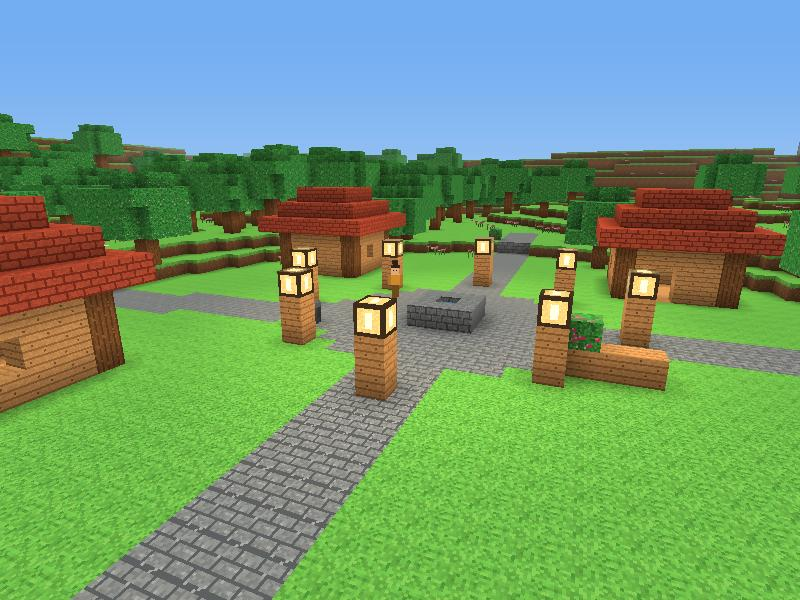
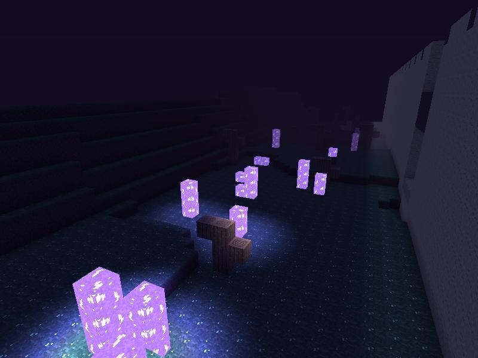

🌍 Public world
No public world is running yet. For now, host your own or join a friend's.
A cozy voxel RPG of lanterns, little quests and friendly faces. Chop and mine, craft gear, help the villagers of Wickhollow, trade with friends — and, if you dare, carry a lantern into the Gloam.


The game itself runs in your browser — no install for the game. A world is run by the small Lanternfall program (or by a public server), and your browser connects to it.
No public world is running yet. For now, host your own or join a friend's.
lanternfall serve (or host to invite friends — on Windows, double-click start-world.bat).This link only works while Lanternfall is running on this computer.
LF1.).lanternfall join (Windows: join-friend.bat) and paste it.Works while lanternfall join is running. Connections are end-to-end encrypted via Tailcat.
One small program to run a world on your computer, host it for friends, or join theirs.
| Platform | File |
|---|
Checksums: SHA256SUMS.txt · All releases & release notes · Build from source: go run ./cmd/lanternfall serve
xattr -d com.apple.quarantine lanternfall).
Only download from this page or the GitHub releases.
No. Each world keeps its own characters, saved by whoever runs it. Progress in a friend's world (or a modded world) never moves to a public world.
Yes, the game has touch controls — but a phone can't run the Lanternfall program, so phones can play on a public world (once one is running). Joining a friend's private world currently needs a computer.
Share invites only privately (direct messages), like a house key. The host can make single-use, expiring invites and revoke them any time.
Windows 10+, macOS 12+, or Linux, and a browser with WebGL2 (current Chrome, Edge, Firefox or Safari). Graphics settings scale down for older machines.
Hosting guide · Mods · README